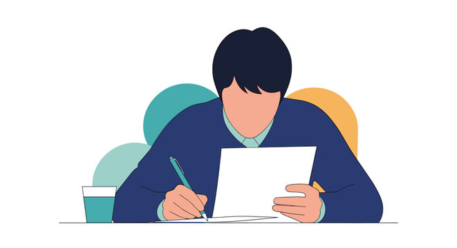

Reflecting
Evaluating the impact of our project
Impact on the Community

Our presentation helped spread awareness about healthy sleep habits by educating the audience about the importance of sleep and the impact of sleep on physical and mental health. We explained how lack of sleep can disrupt daily activities by lowering energy levels and focus. It impacted the community positively as the community will benefit from this information and it is beneficial to their health. This graph below shows the impact on community through a visual data.
Awareness Raised
Community Engagement
Project Success
What We Learned

While working on this project, we gained knowledge about how sleep is important and how sleep affects people’s daily health. We also developed skills that wouldn’t be developed academically like independence. Overall, this project helped us understand how presentations can be used as a tool to spread awareness and educate people in the community about important health topics.
Skills We Developed
- Research Skills – finding reliable information about sleep using both primary and secondary sources
- Communication Skills – presenting information clearly on the presentation and speaking to an unknown audience
- Collaboration – working effectively as a group
- Technical Skills – learning basic web development to make webpage and to make charts
- Self-Management – organizing tasks, meeting deadlines and managing time
What We Would Improve Next Time
If our group was to do this project again, we would improve it by adding more research and collecting feedback from a larger group of people. Since the survey was shared through a group with a limit of only 56 participants. This would help us understand the community’s needs better and make our presentation more effective for our target audience. We would also try to include more interactive elements because in the presentation it feels like the activities were limited, this way the audience will stay more engaged.